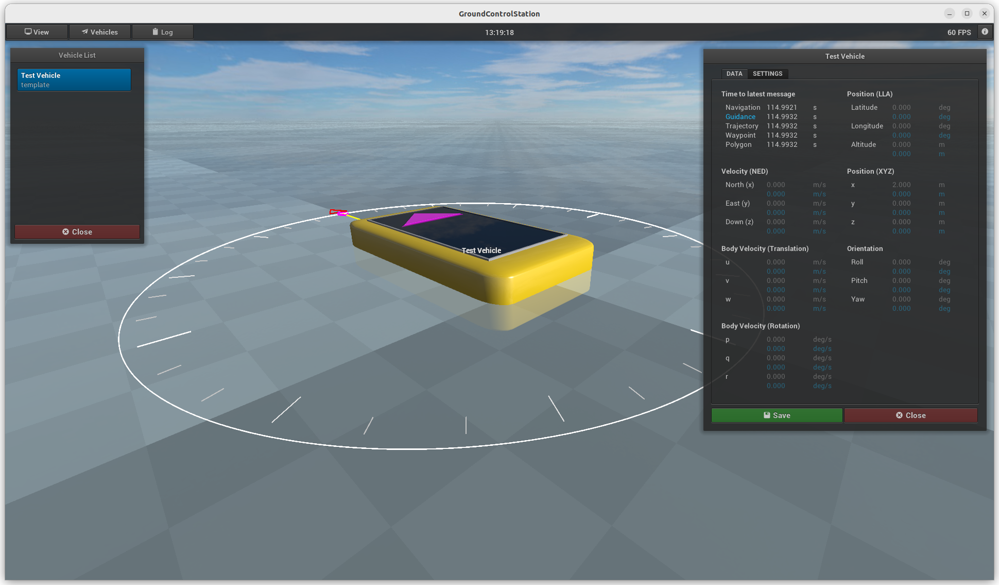
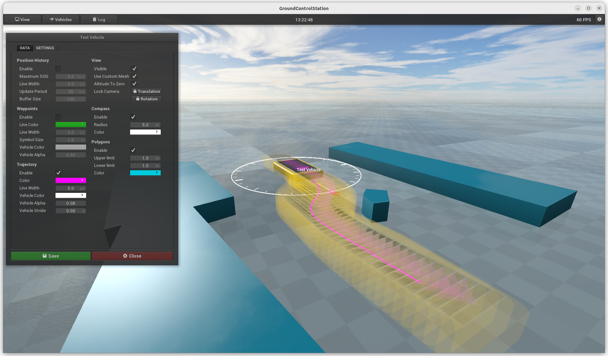

Vehicle Data / Vehicle Settings
For each vehicle that is in the internal database of the GCS, data can be displayed and settings can
be made. This menu can be accessed via the
vehicle list. The menu has the
vehicle name as title and has two tabs.
DATA
This tab contains most navigation and guidance data received via IMP messages. All blue values represent
guidance data. In the section "Time to latest message" the times (in seconds) of the last received IMP messages are shown.
Values that are displayed with a low transparency are not received.
However, if possible, these values are calculated by the GCS.

SETTINGS
In this tab, graphical settings for each vehicle can be adjusted.
Position History
| Value | Description |
|---|
| Enable | Show or hide position history. |
| Maximum SOG | The color of the position history is adapted to the speed over ground (SOG). With this value the maximum value for SOG can be specified. |
| Line Width | Width of the position history line. |
| Update Period | Time period with which positions are to be added to the position history. |
| Buffer Size | Maximum number of values stored in the position history. If the buffer size is reduced, the oldest positions are deleted. |
Waypoints
| Value | Description |
|---|
| Enable | Show or hide waypoints. |
| Color | Color of waypoints. |
| Line Width | Width of the line. |
| Symbol Size | Size of the waypoint symbol. All waypoints are connected by line segments. |
| Vehicle Color | Color multiplier for the vehicle polyhedron at a waypoint. |
| Vehicle Alpha | Normalized alpha value for vehicle polyhedra at waypoint. |
Trajectory
| Value | Description |
|---|
| Enable | Show or hide trajectory. |
| Color | Color of the trajectory. |
| Line Width | Width of the trajectory line. |
| Vehicle Color | Color multiplier for the vehicle polyhedra. |
| Vehicle Alpha | Normalized alpha value for vehicle polyhedra. |
| Vehicle Stride | Specifies the time interval at which the vehicle polyhedron should be displayed along the trajectory. |
View
| Value | Description |
|---|
| Visible | Show or hide the entire vehicle with all associated graphical representations. |
| Use Custom Mesh | If there is a ply file for this vehicle, it will be used for the graphical representation of the vehicle. |
| Altitude To Zero | The vehicle with all associated graphical representations is drawn in the x-y-plane, even if the z-position or altitude has a non-zero value. |
| Lock Camera | This allows the camera to be fixed to the vehicle.
Translation
With this setting, the camera is always pointed at the vehicle, but without rotating itself.
Rotation
With this setting, the camera is always pointed at the vehicle and the orientation of the camera is adjusted with the yaw angle of the vehicle so that the camera always rotates with it. |
Compass
| Value | Description |
|---|
| Enable | Show or hide compass. |
| Radius | The radius of the compass in meters. |
| Color | Color of the compass |
Polygons
| Value | Description |
|---|
| Enable | Show or hide convex polygons. |
| Upper limit | For better visibility, polyhedra are created from each polygon. With this value the upper limit (z-value) of the polyhedra is given. |
| Lower limit | This value defines the lower limit (z-value) of the polyhedra. |
| Color | Color of convex polygons. |
